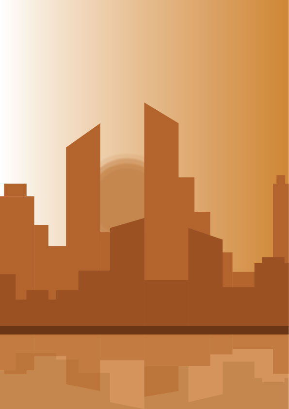

"Cityscapes" are a series of pieces that I created to experiment with more complicated shapes, gradients and color combinations. I wanted to play with the sense of perspective in a 2D space by using different shades of color. My inspiration for this piece was my love for cities and the overall feeling of being in a bustling,fast-paced environment
